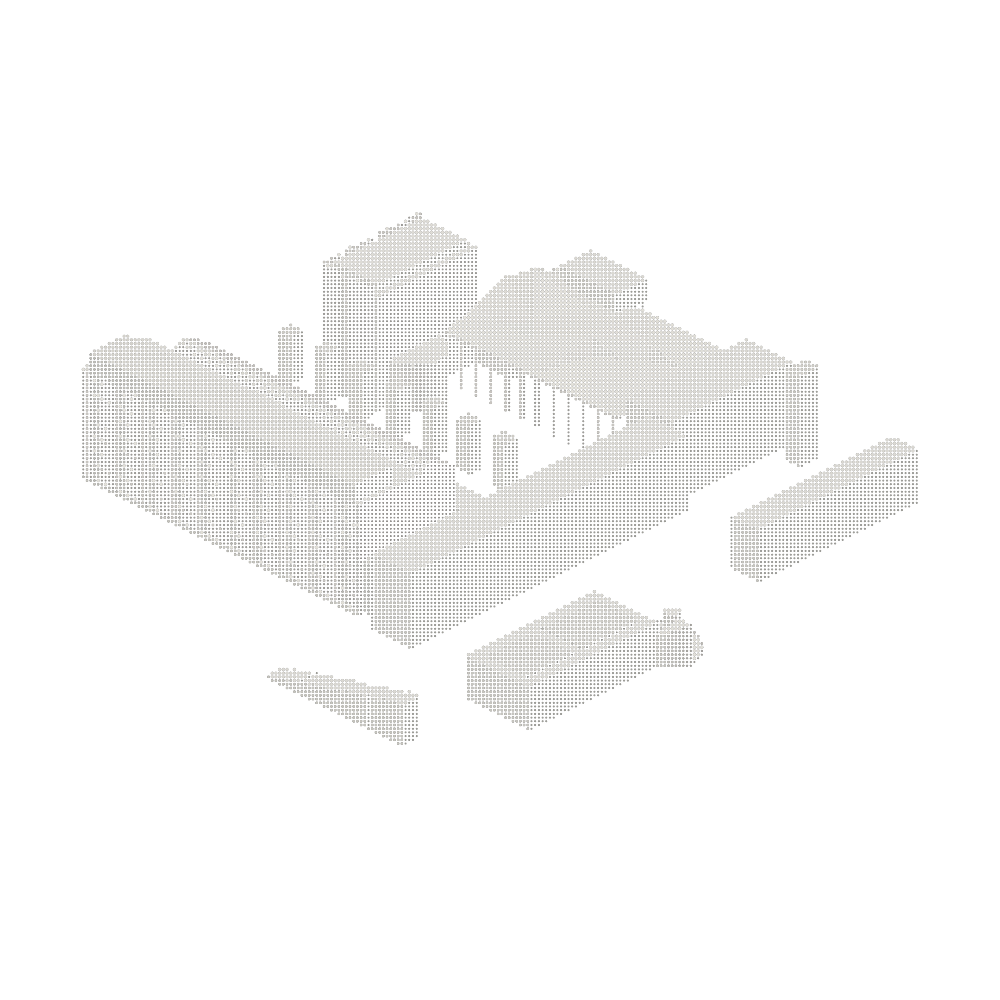
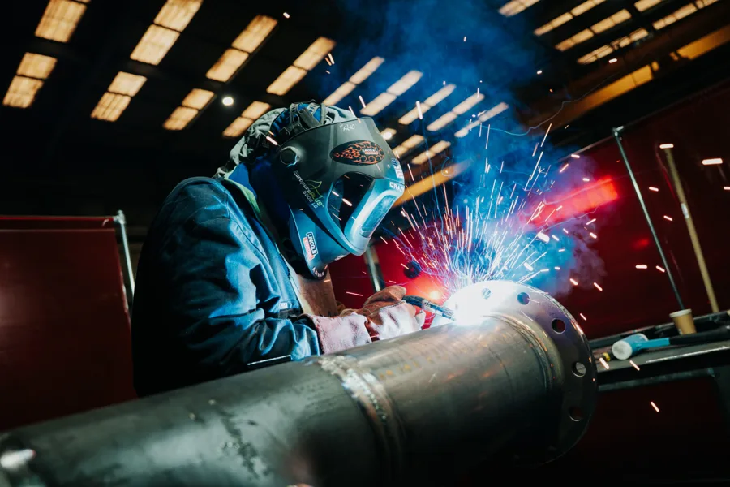
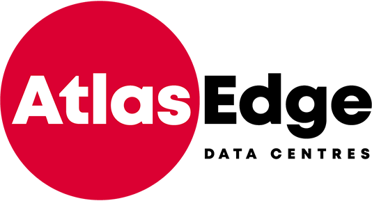
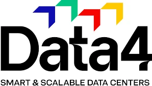
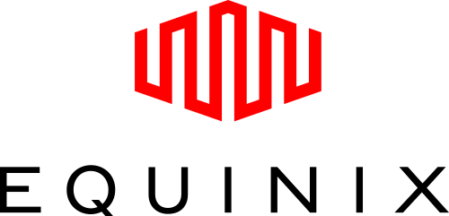
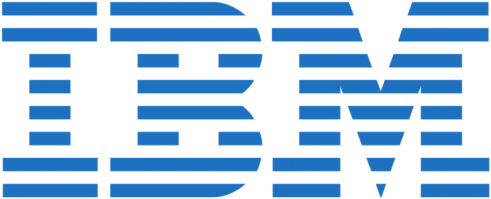

Increasing Schedule Pressure
Project timelines are shrinking while critical equipment can require months of procurement. Anticipating requirements from the earliest design stages is essential to securing delivery milestones.
DATA CENTER
Verdon supports the deployment of Data Centre infrastructure across Europe through an integrated approach combining engineering, off-site manufacturing, quality control and site installation.
An industrial delivery model designed to improve reliability, increase project predictability and support large-scale deployment programmes.
The expansion of AI, cloud computing and high-density workloads is accelerating demand for critical infrastructure. As projects become increasingly complex and schedules tighten, traditional construction methods face growing limitations.
Project timelines are shrinking while critical equipment can require months of procurement. Anticipating requirements from the earliest design stages is essential to securing delivery milestones.
Cooling, power distribution, structural systems and safety infrastructure must work together. Multiple contractors and interfaces increase the risk of incompatibilities, delays and on-site rework.
In critical infrastructure, every detail matters. Manufacturing precision, component traceability and assembly validation directly influence installation quality and operational reliability.
Operators are developing multi-building and multi-site programmes. Their challenge is to replicate proven solutions, maintain consistent quality and secure predictable delivery across successive projects.
From White Space to Grey Space and campus utilities, Verdon engineers, prefabricates and integrates mechanical, electrical and auxiliary systems.
Every package is developed around assembly, transportation, maintenance and site interface requirements, ensuring integration is considered before delivery.

Through its Factory-Built Delivery Model, Verdon coordinates the entire MEP delivery chain: engineering, procurement forecasting, manufacturing, integration, testing, logistics and site installation.
The objective is to move complexity into a controlled industrial environment and reduce uncertainty throughout deployment.
By engaging from RIBA Stage 2, Verdon anticipates technical constraints, defines system interfaces and prepares designs for efficient manufacturing and integration.
Early identification and ordering of long-lead equipment help secure critical milestones, reduce supply chain uncertainty and improve overall project lead times.
Systems are manufactured, assembled and tested in a controlled industrial environment, ensuring precision, traceability and consistent quality before delivery.
Factory-validated systems arrive prepared for installation, reducing on-site activities, limiting interface risks and supporting more predictable commissioning.

With five strategic sites across Belgium and France, Verdon operates an industrial infrastructure dedicated to the manufacturing, assembly and storage of MEP systems for European Data Centres.
This organisation enables Verdon to support complex projects and successive deployment programmes. By building on proven engineering concepts, we aim to deliver repeatable production, consistent quality and greater delivery predictability.
Key figure
180 000+
m² of manufacturing, assembly and storage capacity.
650 MW
Data Centre infrastructure delivered.




Discover Verdon’s expertise in engineering, manufacturing and Data Center infrastructure.
Verdon combines engineering expertise and industrial manufacturing to develop and produce technical systems for complex industrial environments. With a strong focus on Data Centers, the company brings together technical design, manufacturing processes and system integration to address the requirements of demanding infrastructure projects.
Verdon supports Data Center projects through the engineering and off-site manufacturing of technical systems designed for complex MEP infrastructure. Its approach takes into account equipment interfaces, installation constraints and the coordination required to integrate systems into large-scale facilities.
Verdon operates across four key sectors: Data Centers, Energy, Life Sciences & Pharmaceuticals, and Semiconductors. Each sector presents specific technical requirements, operating conditions and infrastructure constraints. Verdon applies its engineering and manufacturing capabilities to address the needs of these different industrial environments.
Verdon’s capabilities cover a range of technical systems, including electrical infrastructure, cooling pipework, aisle containment, liquid cooling assemblies and associated support structures. Each system addresses specific functional requirements and equipment interfaces, with its configuration defined according to project specifications.
Verdon brings engineering and manufacturing capabilities together to prepare technical systems for integration into complex facilities. By considering technical specifications, equipment interfaces and manufacturing constraints, the company works to align system design with practical installation requirements from the outset.
Verdon develops technical systems around the specifications and constraints of each project. Equipment configurations, spatial limitations, connection interfaces and installation requirements inform the approach taken. This allows the scope and configuration of each solution to be defined in line with the project’s technical needs.
Still have questions?
Our team is here to help.
Verdon works alongside project stakeholders to address the technical, engineering and manufacturing requirements of complex infrastructure projects. Contact our team to discuss your needs and explore the scope of our capabilities.